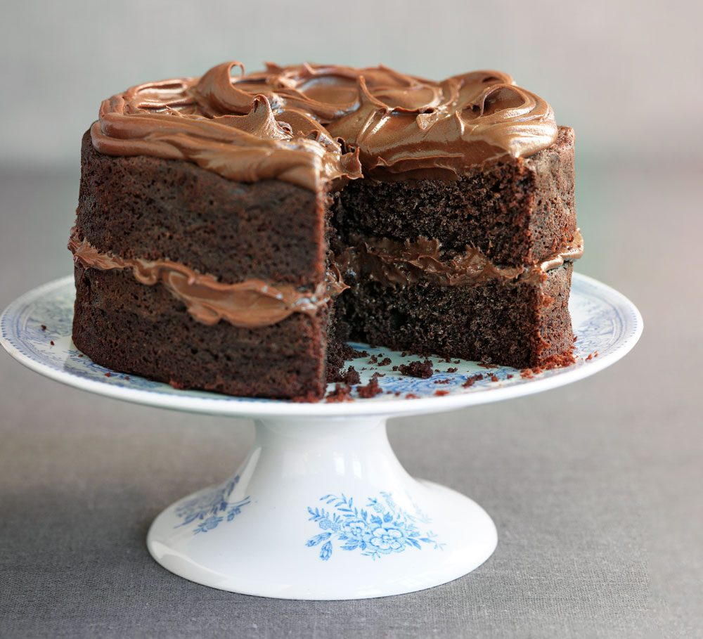

Chocolate Cake

Chocolate Cake Recipe
This decadent chocolate cake is rich, moist, and topped with a creamy chocolate frosting. Follow the steps below to create this irresistible dessert:
Ingredients
- Flour : Use all-purpose flour for the cake base.
- Sugar : Both granulated sugar and brown sugar add sweetness and depth of flavor.
- Cocoa powder : Unsweetened cocoa powder gives the cake its rich chocolate flavor.
- Baking powder and baking soda : These leavening agents help the cake rise.
- Salt : Enhances the flavor of the chocolate.
- Eggs : Provides structure and richness to the cake.
- Milk : Adds moisture and tenderness to the cake.
- Vegetable oil : Keeps the cake moist and soft.
- Vanilla extract : Adds a lovely aroma and flavor.
- Boiling water : Intensifies the chocolate flavor.
- Butter : Used in the frosting for creaminess.
- Powdered sugar : Sweetens the frosting without adding graininess.
- Heavy cream : Gives the frosting a smooth and rich consistency.
Steps
- Preheat the oven and prepare your cake pans.
- Mix the dry ingredients together.
- Beat in the wet ingredients until smooth.
- Stir in the boiling water to thin out the batter.
- Pour the batter into the prepared pans and bake.
- Allow the cakes to cool completely before frosting.
- Prepare the frosting by beating butter, cocoa, powdered sugar, and heavy cream.
- Frost the cake layers and serve.